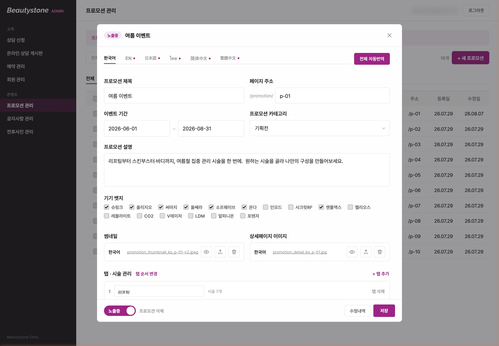
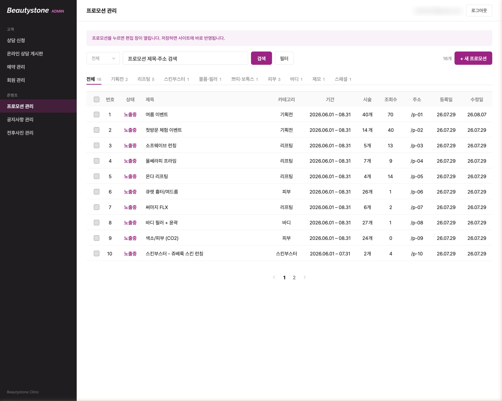
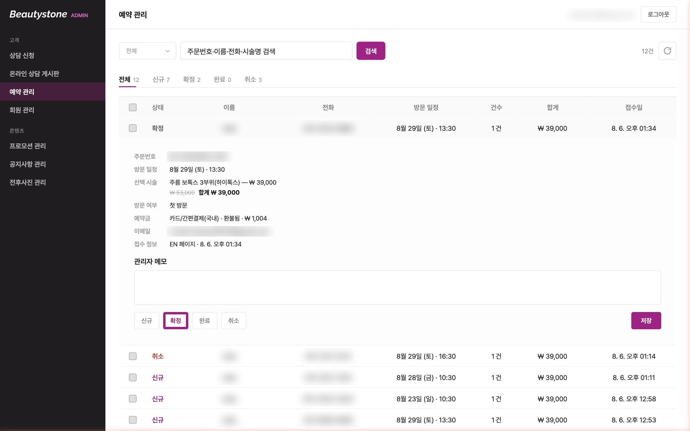
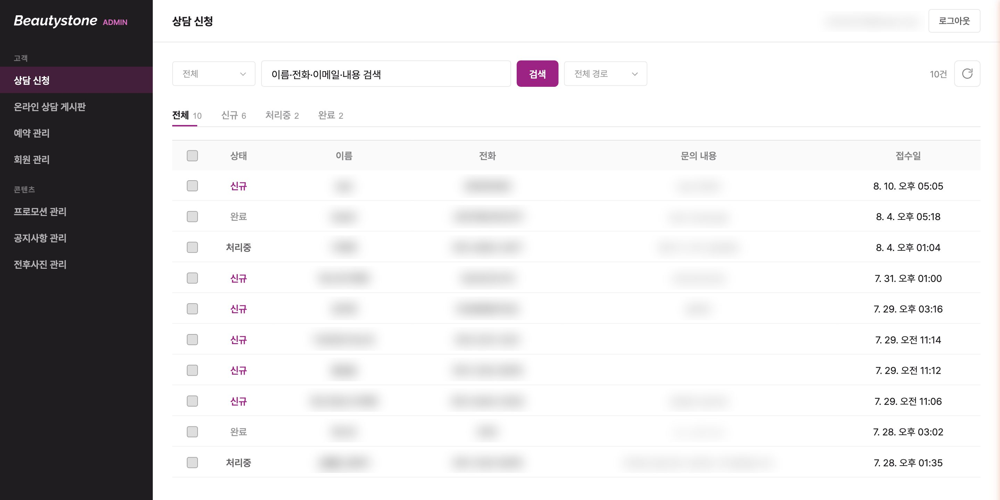
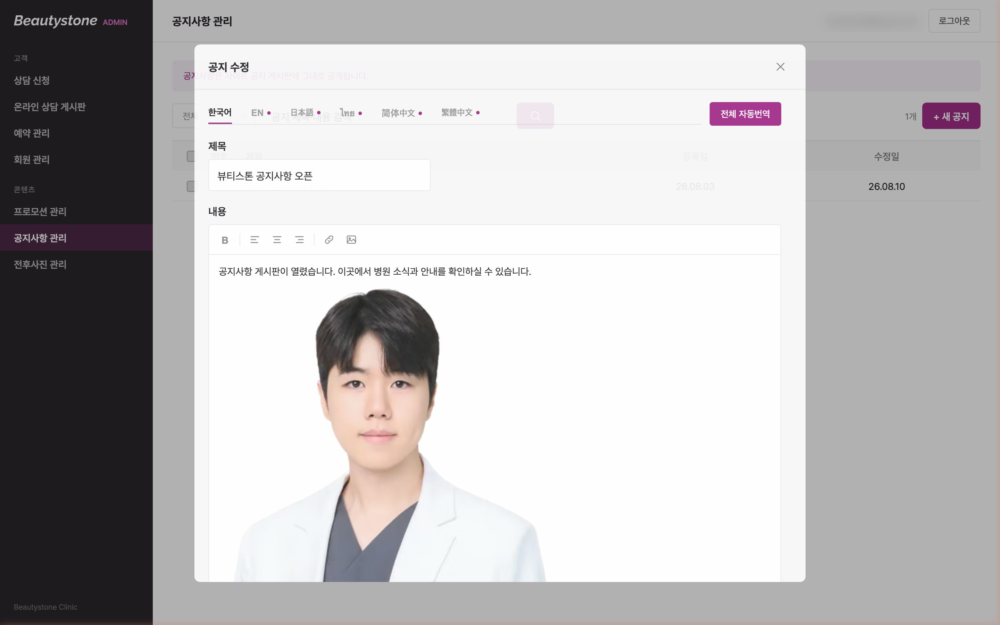

피부과 홈페이지를 Framer 기반 사이트에서 Next.js로 새로 구축한 실서비스 프로젝트. 브랜드 무드보드 수립부터 6개 언어 대응, 프로모션 주문 흐름, 어드민 백오피스까지 기획·디자인·프론트엔드를 전담했습니다.
기간
2026.07 — 2026.08 (4주)
팀 구성
3인 (기여도 90%)
담당
기획 · UX/UI 디자인 · 프론트엔드 개발 · 다국어 · SEO
기술 스택
Next.js · React · TypeScript · SCSS Modules · Supabase · Vercel · GSAP · Git
Overview
뷰티스톤의원은 서울 합정에 있는 피부과로, 리프팅 시술을 중심으로 국내외 환자를 진료합니다. 기존 홈페이지는 Framer로 만들어져 있어 프로모션 항목이나 가격을 바꾸려면 매번 이미지를 다시 제작해야 했고, 외국인 환자를 위한 언어 대응과 사이트 안에서 상담·예약으로 이어지는 흐름이 부족했습니다.
이 프로젝트에서 저는 기획, UX/UI 디자인, 프론트엔드 개발을 전담했고 백엔드 담당자 1인과 결제 영역을 협업했습니다. 브랜드 무드보드를 먼저 세워 디자인 기준을 잡고, 그 기준을 디자인 토큰과 공용 컴포넌트로 옮겨 41개 페이지를 일관되게 만들었습니다. 4주 만에 실 도메인으로 전환해 현재 실제 방문자를 받고 있습니다. 운영 사이트는 이후 병원 측에서 계속 바뀌므로, 제가 작업을 마친 2026년 8월 시점의 화면을 그대로 굳힌 아카이브를 따로 두었습니다. 아래 버튼과 화면 캡처는 그 아카이브로 연결됩니다.
Problem
UX 문제
UI · 운영 문제
Solution
Back Office
병원 담당자가 개발자 없이 프로모션·예약·상담·공지·전후사진을 직접 운영할 수 있도록, 공개 사이트와 같은 디자인 체계 위에 관리 화면 8종을 만들었습니다. 편집 항목은 "코드 수정 없이 병원 담당자가 바꿔야 하는 것"을 기준으로 정했고, 관리자 인가는 화면이 아니라 DB 보안 규칙(RLS)에 두어 화면을 우회해도 데이터에 닿지 못하게 했습니다.





※ 개인정보(이름·연락처·이메일·주문번호)는 흐리게 처리했습니다. 캡처의 데이터는 대부분 개발 중 입력한 테스트 값입니다.
Result
실서비스 전환
4주 만에 실 도메인 전환, 41개 페이지 운영 중
다국어
6개 언어 전면 대응, 언어별 상담 채널 연결
운영 자립
어드민으로 병원 담당자가 직접 콘텐츠 편집
브랜드 일관성
무드보드 → 토큰 → 컴포넌트로 전 페이지 통일